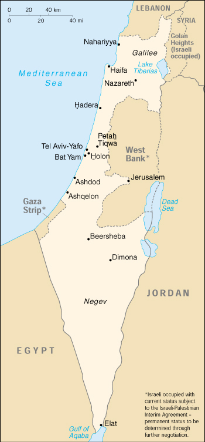

(also see separate Gaza Strip and West Bank entries)

|
Israel (also see separate Gaza Strip and West Bank entries) |
|
| Introduction Geography People Government Economy Communications Transportation Military Transnational Issues | ||
|  | ||
| Israel | Introduction | Top of Page |
| Background: | Following World War II, the British withdrew from their mandate of Palestine, and the UN partitioned the area into Arab and Jewish states, an arrangement rejected by the Arabs. Subsequently, the Israelis defeated the Arabs in a series of wars without ending the deep tensions between the two sides. The territories occupied by Israel since the 1967 war are not included in the Israel country profile, unless otherwise noted. In keeping with the framework established at the Madrid Conference in October 1991, bilateral negotiations are being conducted between Israel and Palestinian representatives (from the Israeli-occupied West Bank and Gaza Strip) and Israel and Syria, to achieve a permanent settlement. On 25 April 1982, Israel withdrew from the Sinai pursuant to the 1979 Israel-Egypt Peace Treaty. Outstanding territorial and other disputes with Jordan were resolved in the 26 October 1994 Israel-Jordan Treaty of Peace. On 25 May 2000, Israel withdrew unilaterally from southern Lebanon, which it had occupied since 1982. |
| Israel | Geography | Top of Page |
| Location: | Middle East, bordering the Mediterranean Sea, between Egypt and Lebanon |
| Geographic coordinates: | 31 30 N, 34 45 E |
| Map references: | Middle East |
| Area: |
total:
20,770 sq km
land: 20,330 sq km water: 440 sq km |
| Area - comparative: | slightly smaller than New Jersey |
| Land boundaries: |
total:
1,006 km
border countries: Egypt 255 km, Gaza Strip 51 km, Jordan 238 km, Lebanon 79 km, Syria 76 km, West Bank 307 km |
| Coastline: | 273 km |
| Maritime claims: |
continental shelf:
to depth of exploitation
territorial sea: 12 NM |
| Climate: | temperate; hot and dry in southern and eastern desert areas |
| Terrain: | Negev desert in the south; low coastal plain; central mountains; Jordan Rift Valley |
| Elevation extremes: |
lowest point:
Dead Sea -408 m
highest point: Har Meron 1,208 m |
| Natural resources: | timber, potash, copper ore, natural gas, phosphate rock, magnesium bromide, clays, sand, oil |
| Land use: |
arable land:
17%
permanent crops: 4% permanent pastures: 7% forests and woodland: 6% other: 66% (1993 est.) |
| Irrigated land: | 1,800 sq km (1993 est.) |
| Natural hazards: | sandstorms may occur during spring and summer; droughts |
| Environment - current issues: | limited arable land and natural fresh water resources pose serious constraints; desertification; air pollution from industrial and vehicle emissions; groundwater pollution from industrial and domestic waste, chemical fertilizers, and pesticides |
| Environment - international agreements: |
party to:
Biodiversity, Climate Change, Desertification, Endangered Species, Hazardous Wastes, Nuclear Test Ban, Ozone Layer Protection, Ship Pollution, Wetlands
signed, but not ratified: Climate Change-Kyoto Protocol, Marine Life Conservation |
| Geography - note: | there are 231 Israeli settlements and civilian land use sites in the West Bank, 42 in the Israeli-occupied Golan Heights, 25 in the Gaza Strip, and 29 in East Jerusalem (August 2000 est.) |
| Israel | People | Top of Page |
| Population: |
5,938,093 (July 2001 est.)
note: includes about 176,000 Israeli settlers in the West Bank, about 20,000 in the Israeli-occupied Golan Heights, about 6,900 in the Gaza Strip, and about 173,000 in East Jerusalem (August 2000 est.) |
| Age structure: |
0-14 years:
27.36% (male 831,523; female 792,982)
15-64 years: 62.73% (male 1,869,114; female 1,855,707) 65 years and over: 9.91% (male 253,105; female 335,662) (2001 est.) |
| Population growth rate: | 1.58% (2001 est.) |
| Birth rate: | 19.12 births/1,000 population (2001 est.) |
| Death rate: | 6.22 deaths/1,000 population (2001 est.) |
| Net migration rate: | 2.85 migrant(s)/1,000 population (2001 est.) |
| Sex ratio: |
at birth:
1.05 male(s)/female
under 15 years: 1.05 male(s)/female 15-64 years: 1.01 male(s)/female 65 years and over: 0.75 male(s)/female total population: 0.99 male(s)/female (2001 est.) |
| Infant mortality rate: | 7.72 deaths/1,000 live births (2001 est.) |
| Life expectancy at birth: |
total population:
78.71 years
male: 76.69 years female: 80.84 years (2001 est.) |
| Total fertility rate: | 2.57 children born/woman (2001 est.) |
| HIV/AIDS - adult prevalence rate: | 0.08% (1999 est.) |
| HIV/AIDS - people living with HIV/AIDS: | 2,400 (1999 est.) |
| HIV/AIDS - deaths: | less than 100 (1999 est.) |
| Nationality: |
noun:
Israeli(s)
adjective: Israeli |
| Ethnic groups: | Jewish 80.1% (Europe/America-born 32.1%, Israel-born 20.8%, Africa-born 14.6%, Asia-born 12.6%), non-Jewish 19.9% (mostly Arab) (1996 est.) |
| Religions: | Jewish 80.1%, Muslim 14.6% (mostly Sunni Muslim), Christian 2.1%, other 3.2% (1996 est.) |
| Languages: | Hebrew (official), Arabic used officially for Arab minority, English most commonly used foreign language |
| Literacy: |
definition:
age 15 and over can read and write
total population: 95% male: 97% female: 93% (1992 est.) |
| Israel | Government | Top of Page |
| Country name: |
conventional long form:
State of Israel
conventional short form: Israel local long form: Medinat Yisra'el local short form: Yisra'el |
| Government type: | parliamentary democracy |
| Capital: | Jerusalem; note - Israel proclaimed Jerusalem as its capital in 1950, but the US, like nearly all other countries, maintains its Embassy in Tel Aviv |
| Administrative divisions: | 6 districts (mehozot, singular - mehoz); Central, Haifa, Jerusalem, Northern, Southern, Tel Aviv |
| Independence: | 14 May 1948 (from League of Nations mandate under British administration) |
| National holiday: | Independence Day, 14 May (1948); note - Israel declared independence on 14 May 1948, but the Jewish calendar is lunar and the holiday may occur in April or May |
| Constitution: | no formal constitution; some of the functions of a constitution are filled by the Declaration of Establishment (1948), the Basic Laws of the parliament (Knesset), and the Israeli citizenship law |
| Legal system: | mixture of English common law, British Mandate regulations, and, in personal matters, Jewish, Christian, and Muslim legal systems; in December 1985, Israel informed the UN Secretariat that it would no longer accept compulsory ICJ jurisdiction |
| Suffrage: | 18 years of age; universal |
| Executive branch: |
chief of state:
President Moshe KATSAV (since 31 July 2000)
head of government: Prime Minister Ariel SHARON (since 2 March 2001) cabinet: Cabinet selected by prime minister and approved by the Knesset elections: president elected by the Knesset for a five-year term; election last held 31 July 2000 (next to be held NA July 2005); prime minister elected by popular vote for a four-year term; election last held 6 February 2001 (next to be held NA 2005); note - in March 1992, the Knesset approved legislation, effective in 1996, which allowed for the direct election of the prime minister, but in 2001 the Knesset voted to restore the previous method under which the legislators will choose the next prime minister after the next legislative elections in 2003 election results: Moshe KATSAV elected president by the 120-member Knesset with a total of 60 votes, other candidate, Shimon PERES, received 57 votes (there were three abstentions); Ariel SHARON elected prime minister; percent of vote - Ariel SHARON 62.5%, Ehud BARAK 37.4%; note - after the next legislative elections scheduled for 2003, the prime minister will be elected by the Knesset |
| Legislative branch: |
unicameral Knesset or parliament (120 seats; members elected by popular vote to serve four-year terms)
elections: last held 17 May 1999 (next to be held NA November 2003) election results: percent of vote by party - One Israel 20.2%, Likud Party 14.1%, Shas 13%, MERETZ 7.6%, Yisra'el Ba'Aliya 5.1%, Shinui 5%, Center Party 5%, National Religious Party 4.2%, United Torah Judaism 3.7%, United Arab List 3.4%, National Union 3%, Hadash 2.6%, Yisra'el Beiteinu 2.6%, Balad 1.9%, One Nation 1.9%, Democratic Movement NA (party formed after election, members elected under Yisra'el Ba'Aliya list); seats by party - One Israel 26, Likud Party 19, Shas 17, MERETZ 10, Yisra'el Ba'Aliya 4, Shinui 6, Center Party 6, National Religious Party 5, United Torah Judaism 5, United Arab List 5, National Union 4, Hadash 3, Yisra'el Beiteinu 4, Democratic Movement 2 (party formed after election, members elected under Yisra'el Ba'Aliya list), Balad 2, One Nation 2 |
| Judicial branch: | Supreme Court (justices appointed for life by the president) |
| Political parties and leaders: | Balad or National Democratic Alliance [Amnon LIPKIN-SHAHAK]; Center Party [Yitzhak MORDECHAI]; Democratic Movement [Roman BRONFMAN]; Gesher [David LEVI]; Hadash [Muhammad BARAKA]; Labor Party [leader vacant]; Likud Party [Ariel SHARON]; MERETZ [Yossi SARID]; National Democratic Alliance (Balad) [leader NA]; National Religious Party [Yitzhak LEVY]; National Union [Rehavam ZEEVI] (includes Herut, Tekuma, and Moledet); One Israel [leader NA] (includes Labor, Gesher, and Meimad); One Nation [Amir PERETZ]; Shas [Eliyahu YISHAI]; Shinui [Tommy LAPID]; United Arab List [Abd al-Malik DAHAMSHAH]; United Torah Judaism [Rabbi Eliezer SHACK, spiritual leader]; Yisra'el Ba'Aliya [Natan SHARANSKY]; Yisra'el Beiteinu [Avigdor LIEBERMAN] |
| Political pressure groups and leaders: | Gush Emunim, Israeli nationalists advocating Jewish settlement on the West Bank and Gaza Strip; Peace Now supports territorial concessions in the West Bank and is critical of government's Lebanon policy |
| International organization participation: | BSEC (observer), CCC, CE (observer), CERN (observer), EBRD, ECE, FAO, IADB, IAEA, IBRD, ICAO, ICC, ICFTU, IDA, IFAD, IFC, ILO, IMF, IMO, Inmarsat, Intelsat, Interpol, IOC, IOM, ISO, ITU, OAS (observer), OPCW, OSCE (partner), PCA, UN, UNCTAD, UNESCO, UNHCR, UNIDO, UPU, WHO, WIPO, WMO, WToO, WTrO |
| Diplomatic representation in the US: |
chief of mission:
Ambassador David IVRY
chancery: 3514 International Drive NW, Washington, DC 20008 telephone: [1] (202) 364-5500 FAX: [1] (202) 364-5607 consulate(s) general: Atlanta, Boston, Chicago, Houston, Los Angeles, Miami, New York, Philadelphia, and San Francisco |
| Diplomatic representation from the US: |
chief of mission:
Ambassador Martin S. INDYK
embassy: 71 Hayarkon Street, Tel Aviv mailing address: PSC 98, Unit 7228, APO AE 09830 telephone: [972] (3) 519-7575 FAX: [972] (3) 517-3227 consulate(s) general: Jerusalem; note - an independent US mission, established in 1928, whose members are not accredited to a foreign government |
| Flag description: | white with a blue hexagram (six-pointed linear star) known as the Magen David (Shield of David) centered between two equal horizontal blue bands near the top and bottom edges of the flag |
| Israel | Economy | Top of Page |
| Economy - overview: | Israel has a technologically advanced market economy with substantial government participation. It depends on imports of crude oil, grains, raw materials, and military equipment. Despite limited natural resources, Israel has intensively developed its agricultural and industrial sectors over the past 20 years. Israel is largely self-sufficient in food production except for grains. Cuts diamonds, high-technology equipment, and agricultural products (fruits and vegetables) are the leading exports. Israel usually posts sizable current account deficits, which are covered by large transfer payments from abroad and by foreign loans. Roughly half of the government's external debt is owed to the US, which is its major source of economic and military aid. The influx of Jewish immigrants from the former USSR topped 750,000 during the period 1989-99, bringing the population of Israel from the former Soviet Union to 1 million, one-sixth of the total population, and adding scientific and professional expertise of substantial value for the economy's future. The influx, coupled with the opening of new markets at the end of the Cold War, energized Israel's economy, which grew rapidly in the early 1990s. But growth began moderating in 1996 when the government imposed tighter fiscal and monetary policies and the immigration bonus petered out. Growth was a strong 5.9% in 2000. But the outbreak of Palestinian unrest in late September and the collapse of the BARAK Government - coupled with a cooling off in the high-technology and tourist sectors - undercut the boom and foreshadows a slowdown to 2%-3% in 2001. |
| GDP: | purchasing power parity - $110.2 billion (2000 est.) |
| GDP - real growth rate: | 5.9% (2000 est.) |
| GDP - per capita: | purchasing power parity - $18,900 (2000 est.) |
| GDP - composition by sector: |
agriculture:
4%
industry: 37% services: 59% (1999 est.) |
| Population below poverty line: | NA% |
| Household income or consumption by percentage share: |
lowest 10%:
2.8%
highest 10%: 26.9% (1992) |
| Inflation rate (consumer prices): | 0.1% (2000 est.) |
| Labor force: | 2.4 million (2000 est.) |
| Labor force - by occupation: | public services 31.2%, manufacturing 20.2%, finance and business 13.1%, commerce 12.8%, construction 7.5%, personal and other services 6.4%, transport, storage, and communications 6.2%, agriculture, forestry, and fishing 2.6% (1996) |
| Unemployment rate: | 9% (2000 est.) |
| Budget: |
revenues:
$40 billion
expenditures: $42.4 billion, including capital expenditures of $NA (2000 est.) |
| Industries: | high-technology projects (including aviation, communications, computer-aided design and manufactures, medical electronics), wood and paper products, potash and phosphates, food, beverages, and tobacco, caustic soda, cement, diamond cutting |
| Industrial production growth rate: | 7% (2000) |
| Electricity - production: | 35.437 billion kWh (1999) |
| Electricity - production by source: |
fossil fuel:
99.89%
hydro: 0.11% nuclear: 0% other: 0% (1999) |
| Electricity - consumption: | 31.899 billion kWh (1999) |
| Electricity - exports: | 1.061 billion kWh (1999) |
| Electricity - imports: | 4 million kWh (1999) |
| Agriculture - products: | citrus, vegetables, cotton; beef, poultry, dairy products |
| Exports: | $31.5 billion (f.o.b., 2000) |
| Exports - commodities: | machinery and equipment, software, cut diamonds, agricultural products, chemicals, textiles and apparel |
| Exports - partners: | US 36%, UK 6%, Benelux 5%, Hong Kong 4%, Netherlands 4% (1999) |
| Imports: | $35.1 billion (f.o.b., 2000) |
| Imports - commodities: | raw materials, military equipment, investment goods, rough diamonds, fuels, consumer goods |
| Imports - partners: | US 20%, Benelux 11%, Germany 8%, UK 8%, Switzerland 6%, Italy 5% (1999) |
| Debt - external: | $38 billion (2000 est.) |
| Economic aid - recipient: | $1.1 billion from the US (1999) |
| Currency: | new Israeli shekel (ILS) |
| Currency code: | ILS |
| Exchange rates: | new Israeli shekels per US dollar - 4.0810 (December 2000), 4.0773 (2000), 4.1397 (1999), 3.8001 (1998), 3.4494 (1997), 3.1917 (1996) |
| Fiscal year: | calendar year |
| Israel | Communications | Top of Page |
| Telephones - main lines in use: | 2.8 million (1999) |
| Telephones - mobile cellular: | 2.5 million (1999) |
| Telephone system: |
general assessment:
most highly developed system in the Middle East although not the largest
domestic: good system of coaxial cable and microwave radio relay; all systems are digital international: 3 submarine cables; satellite earth stations - 3 Intelsat (2 Atlantic Ocean and 1 Indian Ocean) |
| Radio broadcast stations: | AM 23, FM 15, shortwave 2 (1998) |
| Radios: | 3.07 million (1997) |
| Television broadcast stations: | 17 (plus 36 low-power repeaters) (1995) |
| Televisions: | 1.69 million (1997) |
| Internet country code: | .il |
| Internet Service Providers (ISPs): | 21 (2000) |
| Internet users: | 1 million (2000) |
| Israel | Transportation | Top of Page |
| Railways: |
total:
610 km
standard gauge: 610 km 1.435-m gauge (1996) |
| Highways: |
total:
15,965 km
paved: 15,965 km (including 56 km of expressways) unpaved: 0 km (1998 est.) |
| Waterways: | none |
| Pipelines: | crude oil 708 km; petroleum products 290 km; natural gas 89 km |
| Ports and harbors: | Ashdod, Ashqelon, Elat (Eilat), Hadera, Haifa, Tel Aviv-Yafo |
| Merchant marine: |
total:
17 ships (1,000 GRT or over) totaling 631,582 GRT/745,011 DWT
ships by type: container 16, roll on/roll off 1 (2000 est.) |
| Airports: | 55 (2000 est.) |
| Airports - with paved runways: |
total:
30
over 3,047 m: 2 2,438 to 3,047 m: 4 1,524 to 2,437 m: 7 914 to 1,523 m: 10 under 914 m: 7 (2000 est.) |
| Airports - with unpaved runways: |
total:
25
1,524 to 2,437 m: 1 914 to 1,523 m: 4 under 914 m: 20 (2000 est.) |
| Heliports: | 2 (2000 est.) |
| Israel | Military | Top of Page |
| Military branches: | Israel Defense Forces (includes ground, naval, and air components), Pioneer Fighting Youth (Nahal), Frontier Guard, Chen (women); note - historically there have been no separate Israeli military services |
| Military manpower - military age: | 18 years of age |
| Military manpower - availability: |
males age 15-49:
1,522,003
females age 15-49: 1,482,027 (2001 est.) |
| Military manpower - fit for military service: |
males age 15-49:
1,245,757
females age 15-49: 1,208,973 (2001 est.) |
| Military manpower - reaching military age annually: |
males:
49,206
females: 53,379 (2001 est.) |
| Military expenditures - dollar figure: | $8.7 billion (FY99) |
| Military expenditures - percent of GDP: | 9.4% (FY99) |
| Israel | Transnational Issues | Top of Page |
| Disputes - international: | West Bank and Gaza Strip are Israeli-occupied with current status subject to the Israeli-Palestinian Interim Agreement - permanent status to be determined through further negotiation; Golan Heights is Israeli-occupied (Lebanon claims the Shab'a Farms area of Golan Heights) |
| Illicit drugs: | increasingly concerned about cocaine and heroin abuse; drugs arrive in country from Lebanon and increasingly Jordan |
{kind=link}